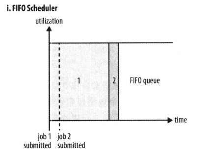
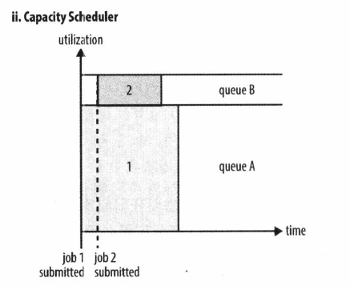
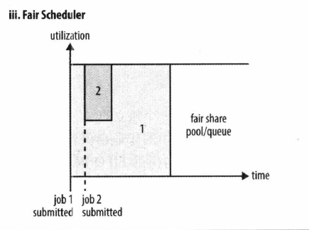
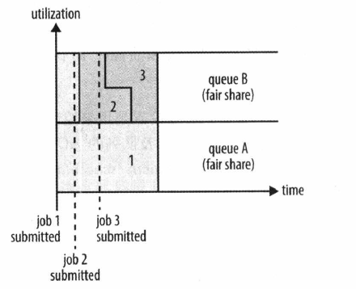

YARN中有三种调度器可用：FIFO调度器（FIFO Scheduler），容量调度器（Capacity Scheduler）和公平调度器（Fair Scheduler）。
FIFO调度器（FIFO Scheduler）

FIFO调度器将应用放置在一个队列中，然后按照提交的顺序（先进先出）运行应用。首先为队列中第一个应用的请求分配资源，第一个应用的请求满足后再依次为队列中下一个应用服务。
FIFO调度器优点在于简单易懂，不需要任何配置，但是不适合大集群。大的应用会占用集群中的所有资源，所以每个应用必须等待直到轮到自己运行。
容量调度器（Capacity Scheduler）

使用容量调度器时，一个独立的专门队列保证小作业一提交就可以启动，由于队列容量是为那个队列中的作业所保留的，因此这种策略是以整个集群的利用率为代价的。这意味着相比于FIFO调度器，大作业执行的时间要长。
容量调度器允许多个组织共享一个集群，每个组织可以分配到全部集群资源的一部分。每个组织被配置一个专门的队列，每个队列被配置为可以使用一定的集群资源。对了可以进一步按层次划分，这样每个组织内的不同用户能够共享该组织队列所分配的资源。在一个队列内，使用FIFO调度策略对应用进行调度。
单个作业使用的资源不会超过其队列容量。然而，如果队列中有多个作业，导致队列资源不够用，这时如果仍有可用的空闲资源，那么容量调度器可能会将空余的资源分配给队列中的作业，哪怕这会超过队列容量。这称为“弹性队列”（queue elasticity）。
正常操作时，容量调度器不会通过强行终止来抢占容器。因此，如果一个队列一开始资源够用，然后随着需求增长，资源开始不够用时，那么这个队列就只能等着其他队列释放容器资源。一般情况下，为队列设置一个最大容量限制，这样这个队列就不会过多侵占其他队列的容量了。
公平调度器（Fair SCheduler）

公平调度器旨在为所有运行的应用公平分配资源。
假设有两个用户A和B，分别拥有自己的队列。A启动一个作业，在B没有需求时，A会分配到全部可用资源；当A的作业仍在运行时，B启动一个作业，一段 时间后，每个作业都用到了一半的集群资源。这时，如果B启动了第二个走也且其他作业仍在运行，那么第二个作业将和B的其他作业（这里是第一个）共享资源，因此B的每个作业将占用四分之一的集群资源，而A仍继续占用一半的集群资源。最终的结果是资源在用户之间实现了公平共享。

- 抢占
公平调度器支持抢占功能。所谓抢占，就是允许调度器终止那些占用资源超过了其公平共享份额的队列的容器，这些融资资源释放后可以分配给资源数量低于应得份额的队列。抢占会降低这个集群的效率，因为被终止的Containers需要重新执行。 - 延迟调度
如果一个应用请求某个节点，那么极有可能此时有其他容器正在该节点上运行。实践发现，此时如果等待一小段时间（不超过几秒），能够增鸡杂在所请求的节点上分配到一个容器的机会，从而可以提高集群的效率。这个特性称为延迟调度（delay scheduling）。容量调度器和公平调度器都支持延迟调度。